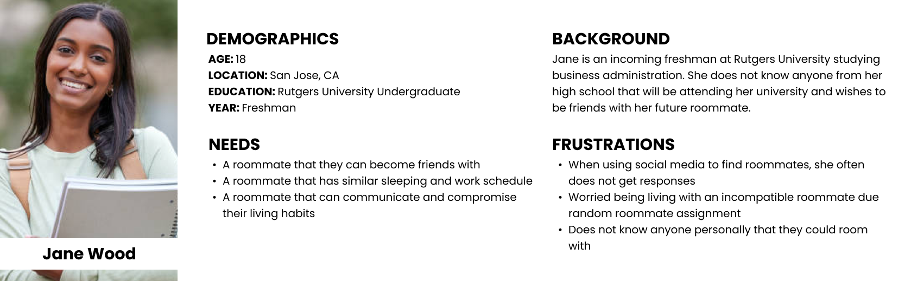
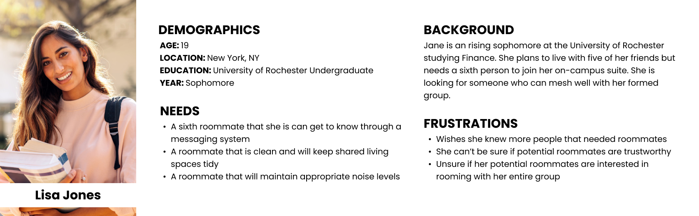
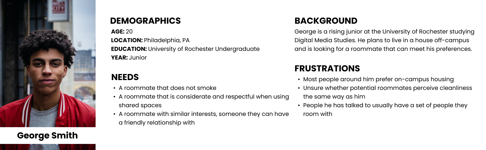
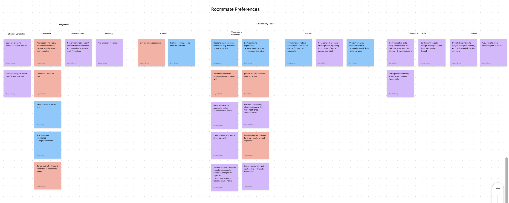
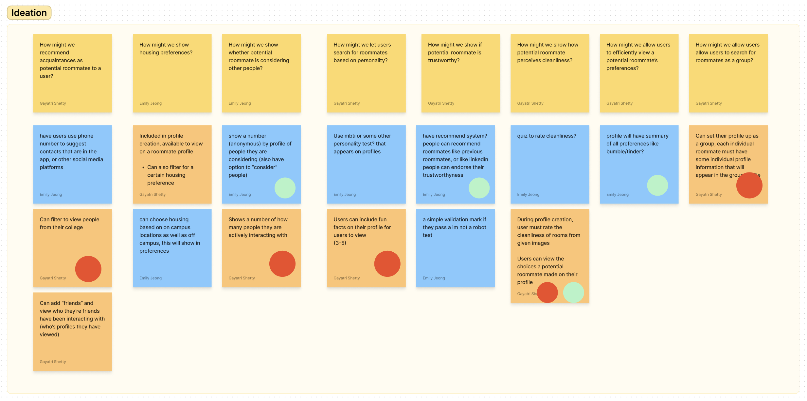
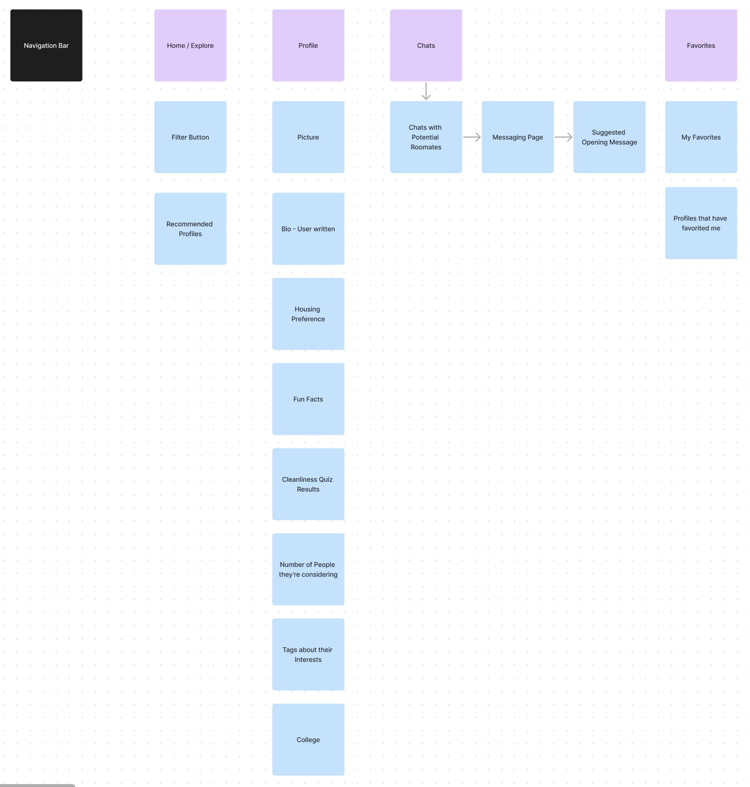

There are no university platforms for finding roommates
Students resort to using social media to find roommates, but there are potential safety issues
Goals
Make it easier to find compatible roommates, based on the following:
Lifestyle
Preferred Housing
Make it easier to contact roommates
Surveys and Interviews
Sample Survey Questions
What apps have you used to find a roommate?
What do you care most about when choosing roommates?
What are you concerned most about when choosing roommates?
Sample Interview Questions
Can you describe your best roommate experience?
If you had to go through the process of finding a roommate again, what would you do differently?
What aspects do you prioritize when looking for a roommate?
How well do you know you need to get to know a potential roommate before agreeing to live with them?
Results
Nearly 80% of surveyed students said that their university does not offer a platform to find roommates
More than half of surveyed students preferred to live in university housing, but other roommate-finding platforms (like Roommaters, Roomie, Roomster, SpareRoom) do not focus on university housing and do not target college students
Over 50% of students surveyed chose to do random roommate selection their freshmen year, but this can result in compatibility issues
Over 80% of students surveyed chose their roommates in their second year, but certain housing requires several roommates to qualify, resulting in a group not big enough
Personas
Based on needfinding results, the following personas were made with user needs in mind.

Persona 1

Persona 2

Persona 3
Affinity Diagram
Interview responses were sorted by the interviewees’ roommate preferences, and their roommate search process.
Participants mainly cited living habits (such as sleeping schedules, cleanliness, smoking etc.) and personality traits (like respectful, and friendly) as important factors in choosing a roommate
When searching for a roommate, participants cited differences in how they went about choosing roommates during freshman year and their upperclassmen years.

Affinity Diagram
Key Insights
When finding a roommate, respondents cared most about: Personality, Smoking preferences, and Cleaning Habits
When finding a roommate, respondents cared least about: Major, Frequency of Guests Coming Over, and Study Habits
When finding a roommate, respondents were most concerned about: Whether potential roommate is trustworthy,
How they perceive cleanliness, and
Whether they are considering other people/turning down a roommate offer
How Might We and Dot Voting
Sample How Might We Statements
How might we show whether potential roommate is considering other people?
How might we show if potential roommate is trustworthy?
How might we show how potential roommate perceives cleanliness?
How might we let users search for roommates based on personality?
Ideation
Dot Voting and Ideation

Dot Voting
Key Features
Filter to view people from their college
View number on profile of how many people they are considering or interacting with
Fun fact section on their profile
Cleanliness quiz to match users based on rating cleanliness of rooms
Profile with summary of their roommate preferences
Profile for a group of people looking for an additional roommate
Information Architecture
Pages
Home
Profile
Chat
Favorites

Information Architecture
Prototyping
Low Fidelity
27 low fidelity screens were created from our information architecture.